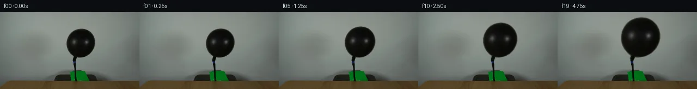

![首帧]()

Round 00
2026-11-04T21:57:01.756716+00:00像素候选变化代码 +171/−0inspection 更新
pixels 551be1c28afa6db0 · code c5eec0ec8d3fa18a
查看本轮 generate.py 真实 diff
--- previous/generate.py
+++ current/generate.py
@@ -0,0 +1,171 @@
+from pathlib import Path
+
+import numpy as np
+from PIL import Image, ImageDraw
+from scipy.ndimage import (
+ binary_fill_holes,
+ gaussian_filter,
+ label,
+ map_coordinates,
+)
+
+import artifact_io
+
+
+ROOT = Path(__file__).resolve().parent
+H, W = 144, 256
+N_FRAMES = 20
+
+
+def source_balloon_alpha(rgb: np.ndarray) -> np.ndarray:
+ """Segment the one dark connected balloon/neck component in the upper ROI."""
+ luminance = rgb.astype(np.float32).mean(axis=2)
+ candidate = np.zeros((H, W), dtype=bool)
+ candidate[25:88, 115:181] = luminance[25:88, 115:181] < 115.0
+ components, _ = label(candidate)
+ component_id = components[58, 148]
+ hard = components == component_id
+ hard = binary_fill_holes(hard)
+
+ # Retain the original edge pixels but give the transformed edge subpixel
+ # antialiasing. Values in the solid interior remain exactly one.
+ soft = gaussian_filter(hard.astype(np.float32), sigma=0.58)
+ soft = np.clip((soft - 0.035) / 0.91, 0.0, 1.0)
+ return soft
+
+
+def inflation_progress(frame_index: int) -> float:
+ """Monotonic smooth growth with a gentle startup and finish."""
+ u = frame_index / (N_FRAMES - 1)
+ smooth = u * u * (3.0 - 2.0 * u)
+ return 0.32 * u + 0.68 * smooth
+
+
+def make_frames(source: np.ndarray) -> tuple[np.ndarray, list[dict]]:
+ src = source.astype(np.float32)
+ alpha0 = source_balloon_alpha(source)
+ yy, xx = np.mgrid[0:H, 0:W].astype(np.float32)
+
+ # The tip/neck is the visual constraint point. Uniform inflation about this
+ # point makes the body grow upward and sideways while leaving the hose fixed.
+ anchor_x, anchor_y = 137.4, 87.0
+ frames = [source.copy()]
+ stats = [{"scale": 1.0, "progress": 0.0, "changed": 0}]
+
+ for t in range(1, N_FRAMES):
+ progress = inflation_progress(t)
+ scale_x = 1.0 + 0.380 * progress
+ scale_y = 1.0 + 0.385 * progress
+
+ # Add only the incremental shadow of the larger balloon. The source
+ # already contains the initial broad shadow on the wall.
+ shadow_cx = 81.0 - 3.0 * progress
+ shadow_cy = 59.0 - 2.0 * progress
+ shadow_rx = 35.0 + 12.0 * progress
+ shadow_ry = 28.0 + 9.0 * progress
+ shadow = np.exp(
+ -1.55
+ * (
+ ((xx - shadow_cx) / shadow_rx) ** 2
+ + ((yy - shadow_cy) / shadow_ry) ** 2
+ )
+ )
+ wall_gate = np.clip((116.0 - yy) / 16.0, 0.0, 1.0)
+ dim = 1.0 - (0.055 * progress) * shadow * wall_gate
+ base = src * dim[..., None]
+
+ # Inverse-map destination pixels into the actual photographed balloon.
+ sx = anchor_x + (xx - anchor_x) / scale_x
+ sy = anchor_y + (yy - anchor_y) / scale_y
+ coords = np.stack([sy, sx])
+ warped_alpha = map_coordinates(
+ alpha0, coords, order=1, mode="constant", cval=0.0
+ )
+ warped_alpha = np.clip(warped_alpha, 0.0, 1.0)
+ warped_rgb = np.empty_like(src)
+ for channel in range(3):
+ warped_rgb[..., channel] = map_coordinates(
… diff truncated; 84 more lines …